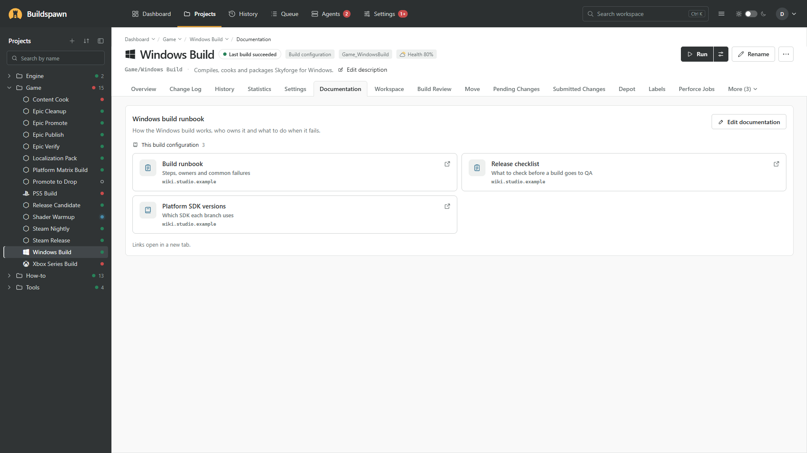

Documentation links
Link a build configuration to the pages your team needs: the runbook, the release checklist, the SDK versions. When a build fails at night, the answer is one click away.
Documentation links are web addresses with a label and a short description. You can add them to a build configuration, to a project, or to both. They show on the build configuration's Documentation tab.

The build feature has its own page: Documentation. Project links are in Project settings.
Add a link
On a build configuration
- Open the build configuration and click Settings › Build Features.
- Find Documentation and click Set up (or Edit if it is already on). You can also click Edit documentation on the Documentation tab.
- Give the section a title and a one-line summary, for example Windows build runbook and How the Windows build works, who owns it and what to do when it fails.
- Add a link for each page: a label, the address and a short description.
- Save. Make sure the On switch of the Documentation card is on.
On a project
- Open the project and click Settings.
- Scroll to Documentation under General.
- Add a summary and the links, the same way, and click Save.
Every build configuration in the project and its subprojects shows these links, under the project's name.
Only http and https addresses are accepted. Links always open in a new browser tab.
Where links show
- The Documentation tab of a build configuration appears after Overview as soon as there is at least one link. Without links, there is no tab.
- Each link is a card with its label, its description and the site it points to.
- The project's links come first, then the build configuration's own links. Links of an outer project come before those of an inner one. Each group is headed with where it comes from, for example This job.
Don't want a project's links on one build configuration? Untick Show the project’s links on this build configuration in its Documentation card. Its own links still show.
Put the links everyone needs, such as the studio's build wiki, on the top project once. Put links for one platform, such as its SDK page, on that platform's build configuration.